VPP学习
Table of Contents
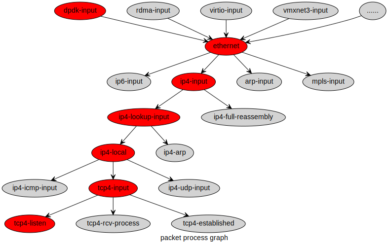
1. 内存管理
1.1. main_heap初始化
1.1.1. 临时初始化内存
此处初始化的内存稍后调用 clib_mem_destroy() 初始化. 主要用来作为解析内存参数时的内存分配.
clib_mem_init >> clib_mem_init_internal
1. clib_mem_main_init
2. clib_mem_vm_map_internal
clib_mem_vm_reserve
3. create_mspace_with_base
4. clib_mem_set_heap
1. 获取系统pagesize
在大页文件系统中创建匿名文件描述符(memfd_create).
mmap映射一页空间, 使用move_pages测试系统numa-node数量
2. 预留系统启动初始化需要的内存
调用mmap预留内存(需要多预留一页内存, 用作管理内存的header(clib_mem_vm_map_hdr_t))
设置内存属性
初始化内存header结构
3. 初始化用户堆内存管理结构
4. 设置默认分配的堆内存
1.1.2. main heap初始化
解析完内存参数后, 重新初始化默认的堆内存.
- 标记 main thread 运行的numa node
- 使用 main heap 作为其他numa node的堆内存
1.2. vlib内存库
vlib_physmem_init
linux_vfio_init
1.3. buffer初始化
2. BinaryAPI
vpp提供了一种二进制API的方案,可以允许各种各样的客户端对数据平面进行编程.
通讯消息定义在 *.api的文件中, API的编译器位于 src/tools/vppapigen/ 目录下.
下面是一个示例, 文件位置: src/vnet/interface.api, 定义了典型的请求/响应消息格式:
/** \brief Set flags on the interface @param client_index - opaque cookie to identify the sender @param context - sender context, to match reply w/ request @param sw_if_index - index of the interface to set flags on @param flags - interface_status flags (only IF_STATUS_API_FLAG_ADMIN_UP used in config) */ autoreply define sw_interface_set_flags { u32 client_index; u32 context; vl_api_interface_index_t sw_if_index; vl_api_if_status_flags_t flags; };
在api编译器编译此文件后, 会在 build-root/install-vpp_debug-native/vpp/include/vnet/interface.api.h 文件中生成如下内容:
#ifdef vl_msg_id vl_msg_id(VL_API_SW_INTERFACE_SET_FLAGS, vl_api_sw_interface_set_flags_t_handler) vl_msg_id(VL_API_SW_INTERFACE_SET_FLAGS_REPLY, vl_api_sw_interface_set_flags_reply_t_handler) #endif #ifdef vl_msg_name vl_msg_name(vl_api_sw_interface_set_flags_t, 1) vl_msg_name(vl_api_sw_interface_set_flags_reply_t, 1) #endif #ifdef vl_msg_name_crc_list #define foreach_vl_msg_name_crc_interface \ _(VL_API_SW_INTERFACE_SET_FLAGS, sw_interface_set_flags, 6a2b491a) \ _(VL_API_SW_INTERFACE_SET_FLAGS_REPLY, sw_interface_set_flags_reply, e8d4e804) \ ; #endif #ifdef vl_typedefs typedef struct __attribute__ ((packed)) _vl_api_sw_interface_set_flags { u16 _vl_msg_id; u32 client_index; u32 context; vl_api_interface_index_t sw_if_index; vl_api_if_status_flags_t flags; } vl_api_sw_interface_set_flags_t; typedef struct __attribute__ ((packed)) _vl_api_sw_interface_set_flags_reply { u16 _vl_msg_id; u32 context; i32 retval; } vl_api_sw_interface_set_flags_reply_t; #endif
要更改接口的管理状态, 二进制api客户端会发送 vl_api_sw_interface_set_flags_t到vpp, vpp会以 vl_api_sw_interface_set_flags_reply_t的消息格式进行响应.
多层次的软件 传输类型 以及共享库实现了多种功能:
- API消息分配 跟踪 打印 重放
- 通过全局的共享内存 成对/专用的共享内存和套接字的消息传输
- 跨越非线程安全消息处理程序的工作线程的屏障同步
消息处理例程对于向vpp递送消息或者从vpp获取消息的传输方式不关心, 可以同时使用多种API消息的传输类型.
2.1. BAPI
2.1.1. 消息分配
二进制api消息总是顺序处理的, 当ring分配器可用时用它作为消息的分配器, 相对于传统的内存分配器来说,此方案非常快, 并且不会引起内存碎片. 参照 src/vlibmemory/memory_shared.c vl_api_msg_alloc_internal()
无论采用何种传输方式, 二进制api消息始终遵循 msgbuf_t 头部:
/** Message header structure */ typedef struct msgbuf_ { svm_queue_t *q; /**< message allocated in this shmem ring */ u32 data_len; /**< message length not including header */ u32 gc_mark_timestamp; /**< message garbage collector mark TS */ u8 data[0]; /**< actual message begins here */ } msgbuf_t;
void vl_msg_api_free (void *a) { api_main_t *am = vlibapi_get_main (); vl_msg_api_free_w_region (am->vlib_rp, a); { msgbuf_t *rv; void *oldheap; rv = (msgbuf_t *) (((u8 *) a) - offsetof (msgbuf_t, data)); /* * 由于只有一个例程/线程对消息缓冲区具有控制权. * 此处仅仅清除rv->q字段来释放缓冲区 */ if (rv->q) { rv->q = 0; rv->gc_mark_timestamp = 0; VL_MSG_API_POISON (rv->data); return; } /* <snip> */ } }
2.1.2. 消息跟踪和重放
vpp可以捕获和重放相当数量的二进制API trace, 涉及数十万的api事物的系统级别的问题可以在一秒内重新运行. 可以添加一些条件点在特定条件下触发.
有了二进制API的跟踪 重放 打印 系统级别的bug上报, 即使系统在经过300000次的api处理之后停止转发, 仍然可以可以离线分析定位问题.
2.1.3. 客户端连接细节
用c语言建立一个到VPP的二进制API连接:
int connect_to_vpe (char *name) { vat_main_t *vam = &vat_main; api_main_t *am = vlibapi_get_main (); if (vl_client_connect_to_vlib ("/vpe-api", name, 32) < 0) return -1; vam->vl_input_queue = am->shmem_hdr->vl_input_queue; vam->my_client_index = am->my_client_index; return 0; }
vpp在发送二进制API消息到客户端时不可以阻塞, vpp端的消息处理例程必须在短时间内完成, 在发送异步消息时, 尽可能积极的读取API的rx ring.
2.1.4. 二进制API消息接收线程
调用 vl_client_connect_to_vlib 将会启动一个二进制api消息接收线程.
static void * rx_thread_fn (void *arg) { rx_thread_fn_arg_t *a = (rx_thread_fn_arg_t *) arg; memory_client_main_t *mm; svm_queue_t *q; vlibapi_set_main (a->am); vlibapi_set_memory_client_main (a->mm); free (a); mm = vlibapi_get_memory_client_main (); q = vlibapi_get_main ()->vl_input_queue; /* So we can make the rx thread terminate cleanly */ if (setjmp (mm->rx_thread_jmpbuf) == 0) { mm->rx_thread_jmpbuf_valid = 1; clib_mem_set_thread_index (); while (1) vl_msg_api_queue_handler (q); } pthread_exit (0); }
要处理自己的二进制API消息队列, 请使用vl_client_connect_to_vlib_no_rx_pthread. vl_msg_api_queue_handler() 使用条件变量或者事件fd(eventfd)与vpp通信, 处理vpp->客户端的流量, 然后睡眠.当消息队列由空变为非空时, vpp使用条件变量广播此事件.
VPP以很高的速度检查二进制API消息输入队列. vpp依据数据平面包处理的要求, 以可变的速度在协程的上下文调用消息处理程序.
2.1.5. 客户端连接断开细节
要和vpp断开链接, 需要调用 vl_client_disconnect_from_vlib, 如果客户端异常终止, 请调用此函数. vpp尽可能的释放资源, 但无法保证回收泄露的共享内存的资源.
2.1.6. 发送API MSG到VPP
许多vpp的二进制API包含客户端的请求消息和简单的状态响应. 下面是一个示例, 设置接口的管理状态:
void
set_flags (test_main_t * tm, int up_down)
{
vl_api_sw_interface_set_flags_t *mp;
mp = vl_msg_api_alloc (sizeof (*mp));
clib_memset (mp, 0, sizeof (*mp));
mp->_vl_msg_id = ntohs (VL_API_SW_INTERFACE_SET_FLAGS);
mp->client_index = tm->my_client_index;
mp->context = 0xdeadbeef;
mp->sw_if_index = ntohl (5);
mp->admin_up_down = up_down;
vl_msg_api_send_shmem (tm->vl_input_queue, (u8 *) & mp);
}
- vl_msg_api_alloc分配消息缓冲区
- 分配的缓冲区并未初始化, 必须进行初始化
- 设置_vl_msg_id成员(消息类型)
- 客户端的library中的全局数据结构 api_main用于在与vpp通讯时跟踪句柄和指针.
2.1.7. 从VPP接收API MSG
除非使用了vl_client_connect_to_vlib_no_rx_pthread, 否则将在单独的线程中接收消息. 由应用程序来保证与接收线程的同步.
#define vl_typedefs /* define message structures */ #include <vpp/api/vpe_all_api_h.h> #undef vl_typedefs /* declare message handlers for each api */ #define vl_endianfun /* define message structures */ #include <vpp/api/vpe_all_api_h.h> #undef vl_endianfun /* instantiate all the print functions we know about */ #define vl_print(handle, ...) #define vl_printfun #include <vpp/api/vpe_all_api_h.h> #undef vl_printfun #define foreach_sock_msg \ _(SESSION_ENABLE_DISABLE_REPLY, session_enable_disable_reply) \ _(APP_ATTACH_REPLY, app_attach_reply) \ _(APPLICATION_TLS_CERT_ADD_REPLY, application_tls_cert_add_reply) \ _(APPLICATION_TLS_KEY_ADD_REPLY, application_tls_key_add_reply) \ _(APP_WORKER_ADD_DEL_REPLY, app_worker_add_del_reply) \ void vppcom_api_hookup (void) { #define _(N, n) \ vl_msg_api_set_handlers(VL_API_##N, #n, \ vl_api_##n##_t_handler, \ vl_noop_handler, \ vl_api_##n##_t_endian, \ vl_api_##n##_t_print, \ sizeof(vl_api_##n##_t), 1); foreach_sock_msg; #undef _ }
vl_msg_api_set_handlers()用来建立消息处理程序. 它为api_main_t结构中的一些并行向量(二级指针/二维数组)设置值.
2.2. 共享内存通信
3. 协议栈/LDP/VCL
3.1. 数据结构
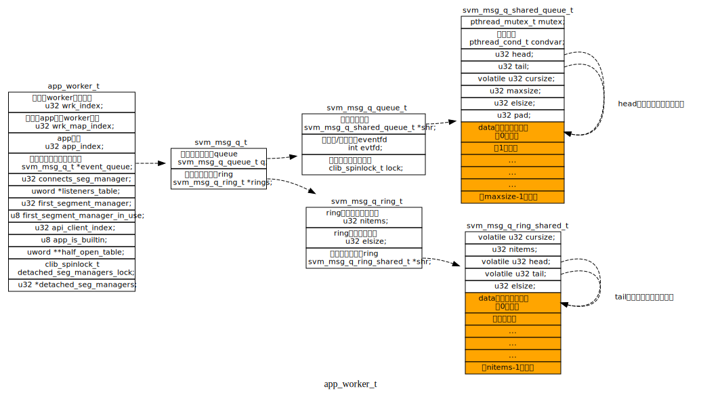
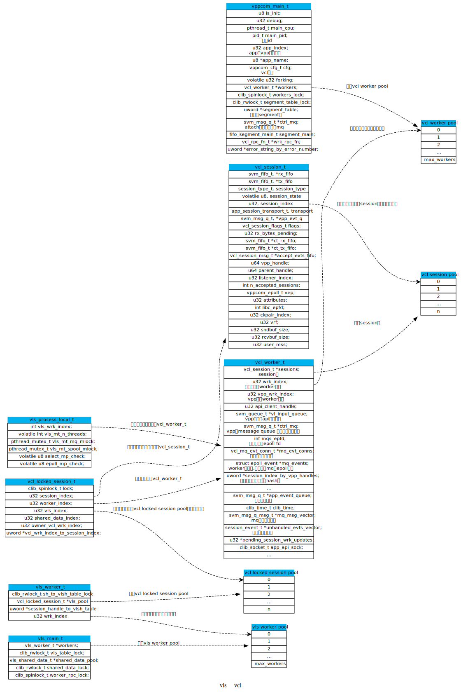
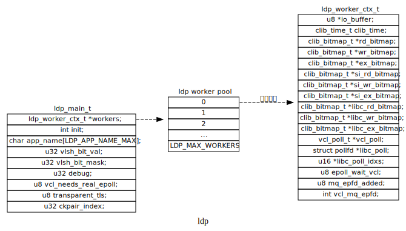
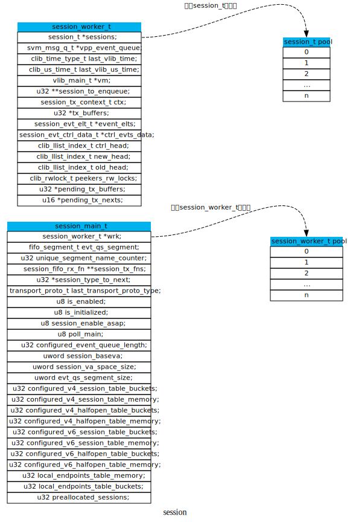
3.2. app注册逻辑
在指定LD_PRELOAD环境变量后， ldp_constructor在main函数之前被执行，然后调用ldp_init进行初始化操作。
3.2.1. ldp_constructor
ldp_constructor
ldp_init
vls_app_create
vppcom_app_create
vppcom_cfg //根据vcl配置文件初始化vcl配置
fifo_segment_main_init
atexit(vppcom_app_exit)
vcl_elog_init
vcl_worker_alloc_and_init //分配vcl_worker_t 并初始化
vcl_api_attach //和VPP关联
pthread_affork(vls_app_pre_fork, vls_app_fork_parent_handler，vls_app_fork_child_handler)
ldp_alloc_workers
"获取环境变量配置相关"
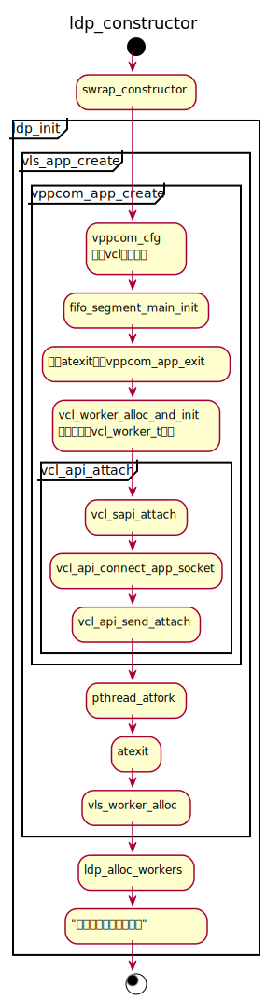
初始化相关的环境变量：
- LDP_ENV_SID_BIT
- 设置可用linux的fd数量
- LDP_ENV_DEBUG
- 设置日志级别
- LDP_ENV_APP_NAME
- app名称
- LDP_ENV_TLS_TRANS
- 使用TLS
- vcl_worker_alloc_and_init
- 此函数主要分配vcl_worker_t结构，判断是否使用epoll事件来通知消息，初始化
mqs_epfd(vcl.conf中的use-mq-eventfd)，初始化mq_msg_vector（消息队列的缓冲区）长度和unhandled_evts_vector（存储未处理的事件缓冲区）长度。
3.2.2. vcl_api_attach
- vcl_sapi_attach
- 使用socket连接到vpp
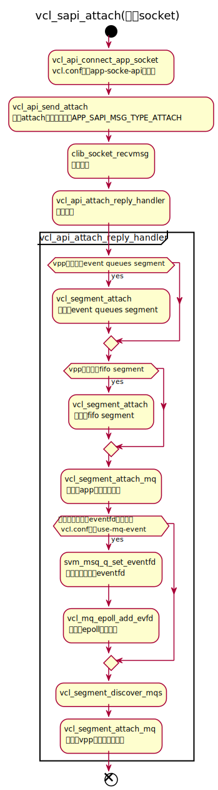
- vcl_bapi_attach
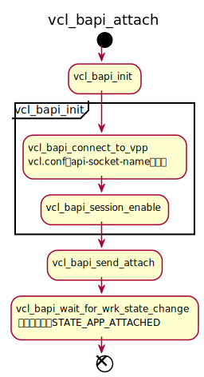
3.3. session queue相关的node
3.4. socket过程
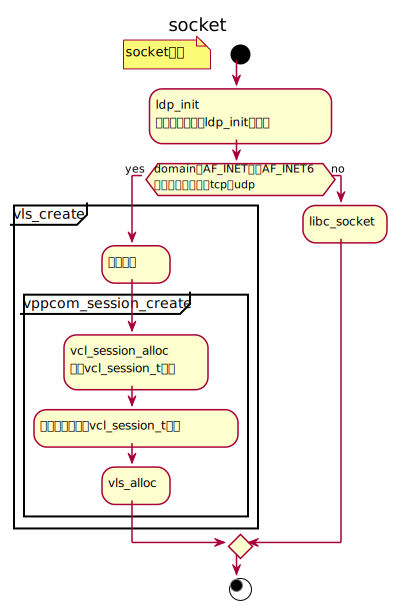
3.5. connect过程
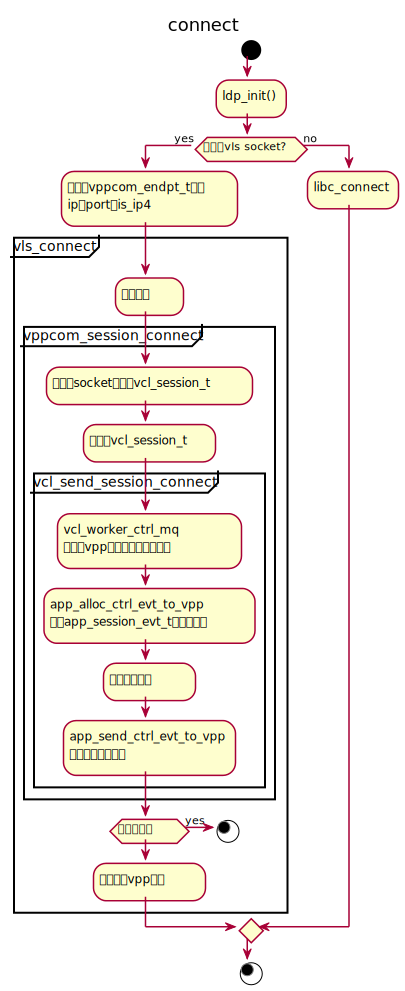
3.6. listen-accept
3.7. 发送数据
3.8. 接受数据
3.9. 协议栈
3.9.1. 连接被动关闭
tcp46-established-inline
tcp_rcv_fin
tcp_handle_disconnects
session_transport_closing_notify
vpp attach handle
app attach reply handle
3.10. VCL
- vls_create ==> socket
- vls_close
- vls_listen
- vls_connnect
- vls_accept
- vls_read
- vls_recvfrom
- vls_write
- vls_wirte_msg
- vls_sendto
- vls_attr
- vls_epoll_create
- vls_epoll_ctl
- vls_epoll_wait
- vls_selsct
3.11. 通信
基于共享内存的单向队列
ssvm_client_init_memfd fifo_segment_attach vcl_segnemt_attach vcl_session_app_add_segment_handler segment_manager_alloc_session_fifos app_worker_add_segment_notify app_worker_alloc_session_fifos vl_api_send_fd_msg vl_sock_api_send_fd_msg session_send_fds mq_send_add_segment_cb app_worker_add_segment_notify
static session_cb_vft_t session_mq_cb_vft = { .session_accept_callback = mq_send_session_accepted_cb, .session_disconnect_callback = mq_send_session_disconnected_cb, .session_connected_callback = mq_send_session_connected_cb, .session_reset_callback = mq_send_session_reset_cb, .session_migrate_callback = mq_send_session_migrate_cb, .session_cleanup_callback = mq_send_session_cleanup_cb, .add_segment_callback = mq_send_add_segment_cb, .del_segment_callback = mq_send_del_segment_cb, };
static init_fn server_init_fns[SSVM_N_SEGMENT_TYPES] = { ssvm_server_init_shm, ssvm_server_init_memfd, ssvm_server_init_private }; static init_fn client_init_fns[SSVM_N_SEGMENT_TYPES] = { ssvm_client_init_shm, ssvm_client_init_memfd, ssvm_client_init_private }; static delete_fn delete_fns[SSVM_N_SEGMENT_TYPES] = { ssvm_delete_shm, ssvm_delete_memfd, ssvm_delete_private };
3.11.1. eventfd
svm_msg_q_alloc_producer_eventfd
3.11.2. 条件变量
pthread_cond_broadcast(&q.condvar)
3.11.3. 通知函数
svm_queue_send_singnal_inline
4. NODE功能梳理
4.1. 收包类的node
4.1.1. dpdk-input
4.1.2. tuntap-input
4.2. flow-report-process
完成流量上报功能, 可以设置接受流量信息的ip 端口, 发送流量信息的ip
4.3. ip4-input
4.4. dpdk-input
5. 单向共享内存队列 svm queue
5.1. 数据结构
typedef struct _svm_queue { pthread_mutex_t mutex; /* 8 bytes */ pthread_cond_t condvar; /* 8 bytes */ int head; int tail; volatile int cursize; int maxsize; int elsize; int consumer_pid; int producer_evtfd; int consumer_evtfd; char data[0]; } svm_queue_t;
5.2. 接口
- 分配并初始化svm queue
参数 描述 nels queue中的元素数量 elsize queue中的元素大小， 一般为4或calineline-size pid 队列消费者的pid return 新初始化的svn queue 在调用此函数前，先将堆切换为svm数据堆。
svm_queue_t *svm_queue_alloc_and_init (int nels, int elsize,int consumer_pid);
- 等待队列事件
在获取到q->mutex的前提下调用。
void svm_queue_wait (svm_queue_t * q);
- 等待队列事件，并设置超时
在获取到q->mutex的前提下调用。
int svm_queue_timedwait (svm_queue_t * q, double timeout);
- 向队列添加元素
void svm_queue_add_raw (svm_queue_t * q, u8 * elem);
- 设置生产者event fd
当生产者产生事件时，会向fd中写入1。
生产者event fd被设置后，将不再使用队列的condvars字段来通知事件。
void svm_queue_set_producer_event_fd (svm_queue_t * q, int fd);
- 设置消费者event fd
当消费者要生成一个事件时，向这个fd中写入1。
虽然实际上，生产者和消费者的fd都指向同一个底层文件描述符，但由于是两个不同进程，其文件描述符表不同。调用者需要确保两个对等点之间正确的交换两个文件描述符。
void svm_queue_set_consumer_event_fd (svm_queue_t * q, int fd);
5.3. 内存结构
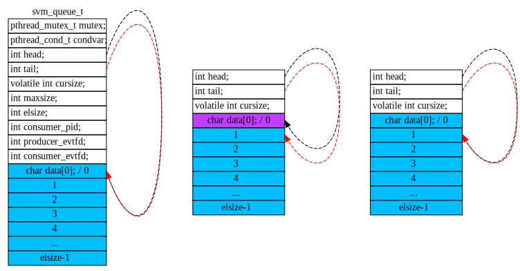